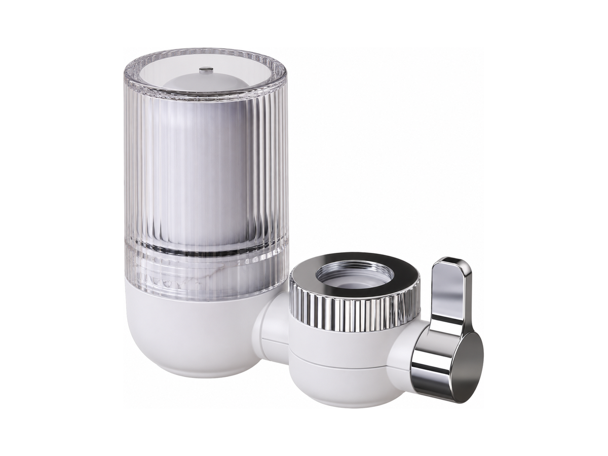

ก๊อกน้ำ
ก๊อกน้ำRP-F01
ตัวกรองก๊อกน้ำแบบคลาสสิก
SKU: RP-F01
MOQ: ยืนยันเมื่อสอบถาม
หน้าแรก/ผลิตภัณฑ์/ตัวกรองก๊อกน้ำ/ RP-F10

ตัวกรองก๊อกน้ำ
ตัวกรองน้ำติดก๊อก (JK-B1) — แบบรวมและแบบแยก
RP-F10 (แบบรวม) และ RP-F11 (แบบแยก) เป็นสองรุ่นในตระกูลตัวกรองน้ำติดก๊อกเดียวกัน ใช้ไส้กรองเดียวกัน ข้อมูลจำเพาะหลัก: รูปแบบ ตัวกรองก๊อกแบบรวมหรือแบบแยก ข้อมูลจำเพาะยืนยันตามรุ่นและคำสั่งซื้อ.
ตัวเลือกการติดตั้งและสีผิว ยืนยันตามคำสั่งซื้อ.
แรงดันไฟฟ้า / ความถี่สามารถปรับตั้งได้ตามประเทศเป้าหมาย การตั้งค่าอื่น ๆ จะยืนยันตามคำสั่งซื้อ.
RP-F10 เป็นตัวกรองน้ำติดก๊อก (JK-B1) ในรูปแบบรวมและแยก RP-F10 (แบบรวม) และ RP-F11 (แบบแยก) เป็นสองรุ่นในตระกูลเดียวกันและใช้ไส้กรองเดียวกัน พร้อมการกรองเจ็ดขั้นตอนและการเลือกน้ำดิบ / น้ำกรองในทั้งสองรุ่น RP-F10 มาพร้อมฝาครอบสีน้ำเงินเข้มหรือสีเขียว; ฝาครอบสีเขียวเป็นตัวเลือกฝาครอบของตัวกรองเดียวกัน มีข้อมูลจำเพาะเดียวกับรุ่นสีน้ำเงินเข้ม ตัวเลือกไส้กรอง อัตราการไหลและความจุที่กำหนด ความละเอียดในการกรอง แรงดันและอุณหภูมิ และอายุไส้กรองและขนาด ยืนยันตามคำสั่งซื้อ.
ปริมาณสั่งซื้อขั้นต่ำคือเท่าใด?
คำสั่งซื้อครั้งแรกคือ 200 ชิ้น ต่อรุ่น และการสั่งซื้อซ้ำคือ 500 ชิ้น.
สามารถสั่งซื้อตัวอย่างก่อนสั่งซื้อจำนวนมากได้หรือไม่?
ใช่ ตัวอย่างพร้อมภายใน 15 วัน และจะคืนค่าตัวอย่างเมื่อสั่งซื้อจำนวนมากครั้งแรก คำสั่งซื้อจำนวนมากใช้เวลา 40 วันหลังอนุมัติตัวอย่าง และจัดส่ง FOB Shenzhen.
ควรเลือกรุ่นย่อยแบบใด?
เสนอราคาเป็น RP-F10 และระบุฝาครอบ (สีน้ำเงินเข้มหรือสีเขียว) RP-F11 เป็นรุ่นแยกของไส้กรองเดียวกัน พร้อมตัวเปลี่ยนทิศทางแยกต่างหาก.
ฝาครอบสองสีสำหรับ RP-F10 — เสนอราคาเป็น RP-F10 และระบุฝาครอบ (สีน้ำเงินเข้มหรือสีเขียว); RP-F11 เป็นรุ่นแยก.
เลื่อนเมาส์เหนือภาพรุ่นย่อยเพื่อดูข้อกำหนด บนหน้าจอสัมผัส ให้แตะที่ภาพ.


ข้อมูลจำเพาะฉบับเต็มของแต่ละรุ่น แสดงเคียงข้างกัน ตารางข้อมูลจำเพาะด้านล่างแสดงค่าของ RP-F10.
| ข้อกำหนด | RP-F10-1 — ฝาครอบสีน้ำเงินเข้ม (JK-B1) | RP-F10-2 — ฝาครอบสีเขียว (JK-B2) | RP-F10-3 — แบบแยก (JK-A1) |
|---|---|---|---|
| รูปแบบ | ตัวกรองก๊อกน้ำแบบบูรณาการ | ตัวกรองก๊อกน้ำแบบบูรณาการ | ตัวกรองก๊อกน้ำแบบแยกส่วน |
| ตัวเลือกไส้กรอง | ยืนยันตามคำสั่งซื้อ | ยืนยันตามคำสั่งซื้อ | ยืนยันตามคำสั่งซื้อ |
| ทางออกน้ำ | เลือกน้ำดิบ / น้ำกรอง | เลือกน้ำดิบ / น้ำกรอง | เลือกน้ำดิบ / น้ำกรอง |
| อัตราการไหลที่กำหนด / ความจุ | ยืนยันตามคำสั่งซื้อ | ยืนยันตามคำสั่งซื้อ | ยืนยันตามคำสั่งซื้อ |
| ความละเอียดในการกรอง | ยืนยันตามคำสั่งซื้อ | ยืนยันตามคำสั่งซื้อ | ยืนยันตามคำสั่งซื้อ |
| แรงดัน / อุณหภูมิ | ยืนยันตามคำสั่งซื้อ | ยืนยันตามคำสั่งซื้อ | ยืนยันตามคำสั่งซื้อ |
| อายุไส้กรอง / ขนาด | ยืนยันตามคำสั่งซื้อ | ยืนยันตามคำสั่งซื้อ | ยืนยันตามคำสั่งซื้อ |
| การกรอง | การกรอง 7 ขั้นตอน | การกรอง 7 ขั้นตอน | การกรอง 7 ขั้นตอน |
| ฝาครอบ | สีน้ำเงินเข้ม | สีเขียว | — |
7 แถวข้อมูลจำเพาะจากแคตตาล็อก ROPureOEM.
| รูปแบบ | ตัวกรองก๊อกน้ำแบบบูรณาการ |
|---|---|
| ตัวเลือกไส้กรอง | ยืนยันตามคำสั่งซื้อ |
| ทางออกน้ำ | เลือกน้ำดิบ / น้ำกรอง |
| อัตราการไหลที่กำหนด / ความจุ | ยืนยันตามคำสั่งซื้อ |
| ความละเอียดในการกรอง | ยืนยันตามคำสั่งซื้อ |
| แรงดัน / อุณหภูมิ | ยืนยันตามคำสั่งซื้อ |
| อายุไส้กรอง / ขนาด | ยืนยันตามคำสั่งซื้อ |
ข้อมูลจำเพาะนำมาจากแคตตาล็อก ROPureOEM หากค่ายังไม่ได้รับการยืนยัน จะระบุว่า “ยืนยันตามคำสั่งซื้อ” — เราไม่เผยแพร่ตัวเลขที่ยังไม่ได้รับการยืนยัน.